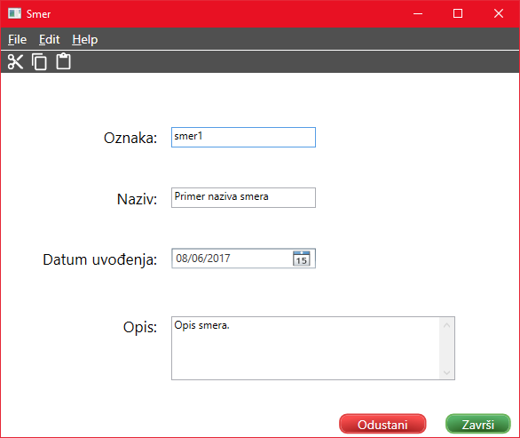

Dodavanje/izmena smera
Da biste uneli novi smer potrebno je popuniti sva polja.

Sadržaj polja za oznaku mora da bude jedinstven, odnosno dva smera ne mogu imati istu oznaku.
Polje za naziv smera treba da sadrži naziv smera koji se unosi.
Datum uvođenja predstavlja datum uvođenja smera. Datum je moguće odabrati klikom miša na željeni dan ili
uz pomoć strelica na tastaturi i pritiskom dugmeta Enter.
U polju za opis se unosi opis smera.
Da bi podaci ostali sačuvani kliknite Završi ili prečicu Ctrl+S.
Prilikom izmene već unesenog smera, takođe je potrebno sačuvati.
Ukoliko želite da odustanete od dodavanja/izmene, potrebno je kliknuti na Odustani ili prečicom na tastaturi
Ctrl+Q.
Link do početnog prozora za pomoć: Početna stranica